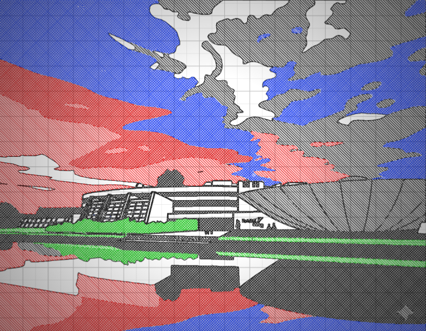
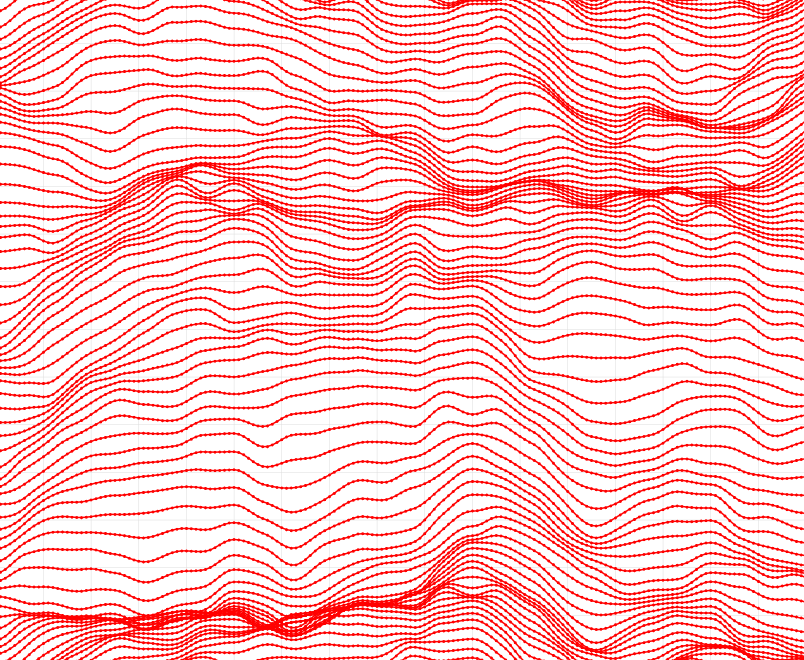
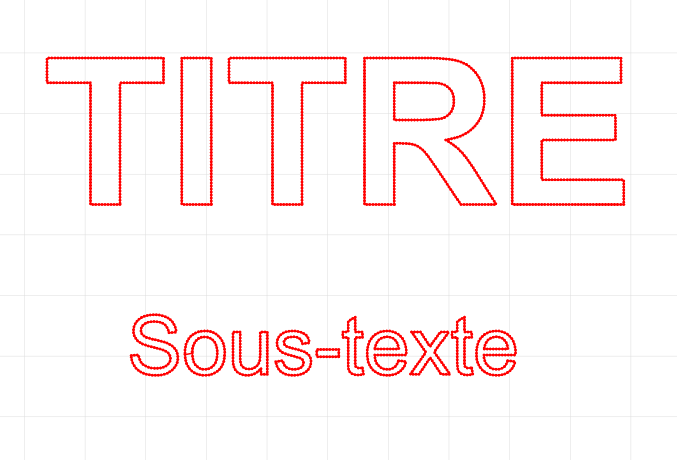
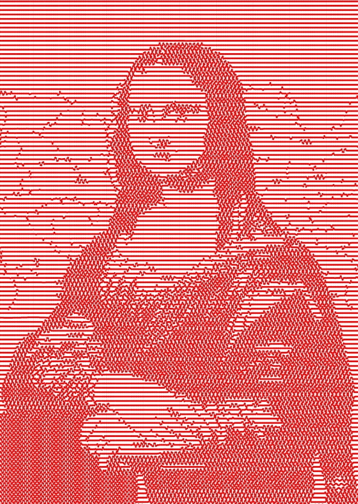
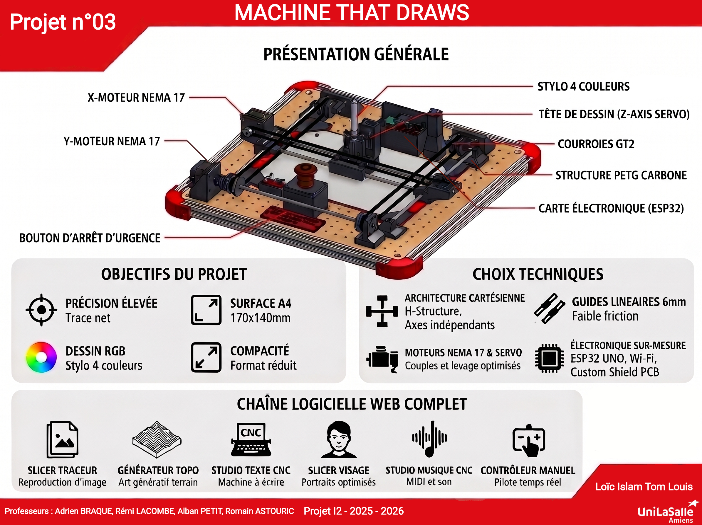

Présentation générale
Bienvenue dans la documentation officielle du groupe 3 de MachineThatDraws. Ce projet est fait au sein du MakerSpace d'UniLaSalle Amiens dans le cadre d'un projet académique (60 heures), cette machine est un traceur vectoriel automatisé capable de dessiner sur une surface maximale de 170x140 mm.
1. Évolution Matérielle (Hardware)
Le prototype initial (POC) reposait sur un microcontrôleur Arduino Uno et un CNC Shield V3 standard. Pour la version finale, la machine évolue vers une solution sur-mesure :
- ESP32 UNO : Remplacement de l'Arduino par un microcontrôleur ESP32. Ce choix offre beaucoup plus de mémoire, permet la transition de GRBL vers le firmware moderne FluidNC, intègre le Wi-Fi, et ouvre la possibilité d'ajouter un écran avec menu interactif.
- Shield sur-mesure : Nous avons conçu, routé et fabriqué notre propre circuit imprimé pour gérer proprement la séparation des alimentations (12V / 5V) et l'intégration des drivers moteurs ainsi que rajouter différentes options comme un écran et des boutons.
- Dessin Multicouche (RGB) : La machine permet la réalisation de tracés complexes en couleurs. Le changement de mine du stylo s'effectue manuellement par l'utilisateur.
- Mécanique et Matériaux : Les pièces structurelles sont imprimées en PETG chargé en fibre de carbone, et les chariots utilisent des bagues auto-lubrifiantes en PETG-PTFE.
2. La Chaîne Logicielle (Software)
Toute l'interface utilisateur, la génération d'art et les slicers ont été faits en HTML, CSS et JavaScript, tournant directement dans un navigateur Web. Cette suite logicielle se décline en 6 applications dédiées.
-

1. Slicer Traceur (Reproduction d'images) : Convertit n'importe quelle image en trajectoires physiques pour la machine. Il utilise un système de traitement à 3 zones basé sur des seuils réglables : les zones sombres génèrent un quadrillage croisé, les zones grises des hachures simples, et les zones claires sont épargnées. Il intègre également des outils complets de géométrie (décalage, miroir X/Y, adoucissement anti-bruit). -

2. Générateur Topo (Art Génératif) : Utilise des bruits de Perlin pour générer des paysages topographiques. L'utilisateur peut personnaliser le relief à l'infini en modifiant la "graine" (seed) de génération, l'espacement des lignes et la hauteur des montagnes avant d'envoyer le tracé en G-Code. -

3. Studio Texte CNC (Traitement de texte) : Une reproduction de Word fonctionnant comme un logiciel de traitement de texte. Il permet d'ajouter et de superposer plusieurs calques de texte, de choisir différentes polices, de gérer l'orientation, et d'ajuster finement la position (X/Y). La machine se transforme alors en machine à écrire. -

4. Slicer Visage (Portraits optimisés) : Un algorithme spécialement pensé pour la reproduction de visages et de jeux d'ombres. Son procédé de rendu est unique : les zones claires de l'image sont représentées par de simples traits droits réguliers, tandis que les zones sombres sont converties en ondes sinusoïdales. Cette variation de forme crée des effets d'ombres. - 5. Studio Musique CNC (Lecteur MIDI) : Un détournement technique et ludique de la machine. Ce module permet de charger des fichiers musicaux standards (.mid). L'interface attribue ensuite chaque piste musicale à un moteur pas-à-pas spécifique de la CNC. En vibrant à des fréquences précises, les moteurs génèrent des notes et jouent physiquement la musique.
- 6. Contrôleur Manuel (Interface de contrôle) : Un panneau de contrôle manuel pour piloter la machine en temps réel. Il offre des commandes directes pour les déplacements (X/Y) avec les flèches du clavier, le contrôle de la hauteur du stylo (Z) avec espace, et la réalisation de tests de vitesse pour affiner les futurs réglages de la machine.
🎬 Présentation du projet en 1 minute
Découvrez MachineThatDraws en action.
📋 Poster de présentation du projet

Cliquez sur l'image pour l'ouvrir en grand dans un nouvel onglet.